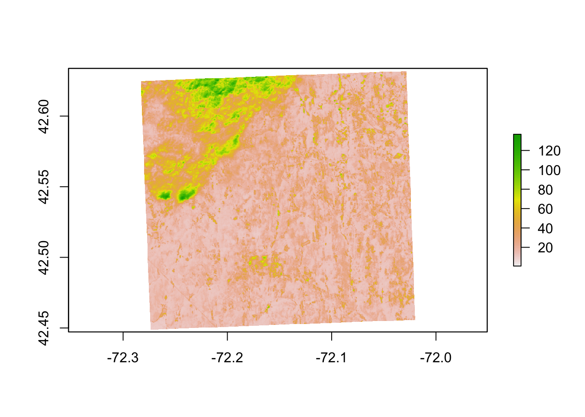
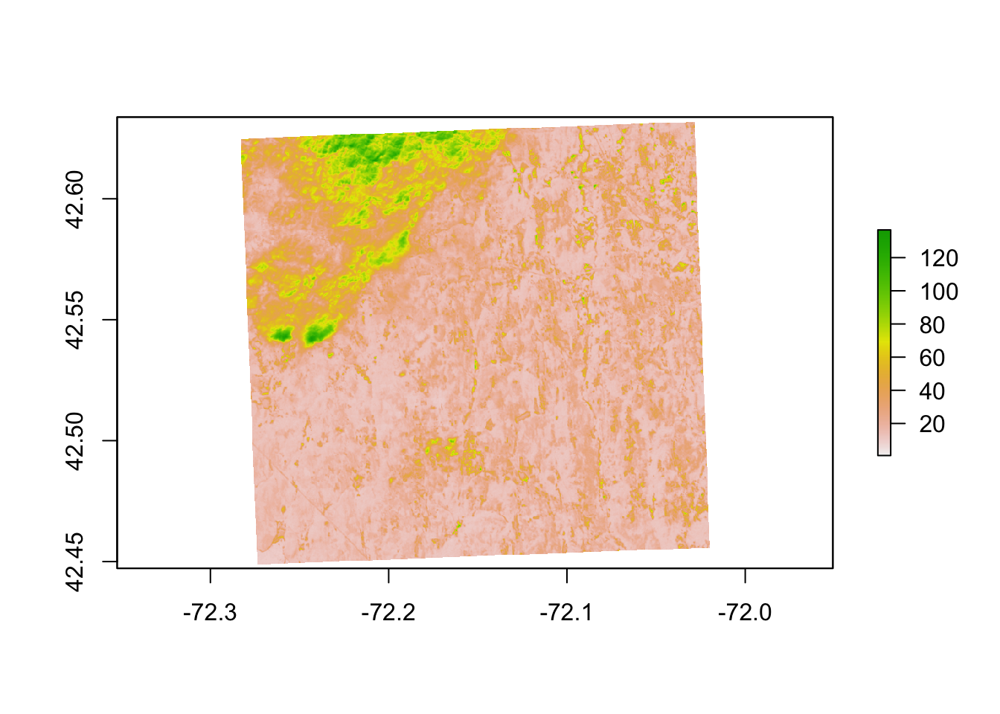
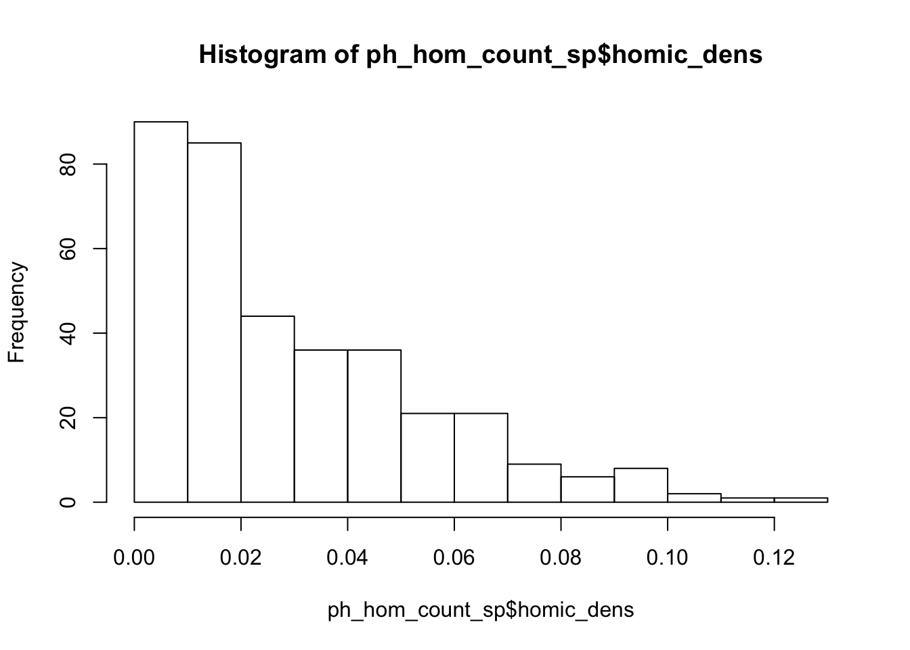
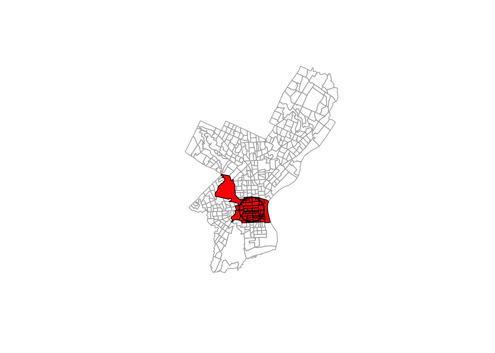

Chapter 2 Spatial data manipulation in R
Learning Objectives
- Join attribute data to a polygon vector file
- Reproject a vector file
- Select polygons of a vector by location
In this section we will look at some libraries and commands that allow us to process spatial data in R and perform a few examples of commonly used operations.
2.1 Attribute Join
An attribute join brings tabular data into a geographic context. It refers to the process of joining data in tabular format to data in a format that holds the geometries (polygon, line, or point).
If you have done attribute joins of shapefiles in GIS software like ArcGIS or QGis you know that you need a unique identifier in both the attribute table of the shapefile and the table to be joined.
In order to combine a Spatial*Dataframe with another table (which would be a dataframe in R) we do exactly the same. We have a Spatial*Dataframe5 that contains the geometries and an identifying index variable for each. We combine it with a dataframe, that includes the same index variable with additional variables.

Attribute Join of countryData table to worldCountries using unique ID variables
The sp package has a merge command which extends the base merge command to works with Spatial* objects as argument.
Assume we have:
- a
SpatialPolygonObjectnamed worldCountries, and - a dataframe called countryData with the attribute data to join
where:
- “id-number” is the colum that contains the unique identifier in worldCountries, and
- “countryID” is the column that contains the unique identifier in countryData.
We would then say:
library(sp) # make sure that is loaded
worldCountries <- merge(worldCountries, countryData, by.x = "id-number", by.y = "countryID")(You may come across alternative suggestions for joins that operate on the data slot @data of the Spatial* object. While they may work, we don’t suggest them here, as good practice suggests not to use the slot explicitly if at all possible.)
Load the CSV table PhiladelphiaEduAttain.csv into a dataframe in R and name it ph_edu.
ph_edu <- read.csv("data/PhiladelphiaEduAttain.csv")
names(ph_edu)Read the PhillyTotalPopHHinc shapefile into an object named philly_sf. Check out the column names of philly_sf and and of ph_edu to determine which one might contain the unique identifier for the join.
## sf ##
# if you need to read in again:
# philly_sf <- st_read("data/Philly/")
names(philly_sf)Join the ph_edu data frame with philly using merge as described above. Use the names() command to see if the join was successful.
# this is base::merge()
philly_sf_merged <- merge(philly_sf, ph_edu, by.x = "GEOID10", by.y = "GEOID")
names(philly_sf_merged) # note the geometry column#> [1] "GEOID10" "STATEFP10" "COUNTYFP10"
#> [4] "TRACTCE10" "NAME10" "NAMELSAD10"
#> [7] "MTFCC10" "FUNCSTAT10" "ALAND10"
#> [10] "AWATER10" "INTPTLAT10" "INTPTLON10"
#> [13] "GISJOIN" "Shape_area" "Shape_len"
#> [16] "medHHinc" "totalPop" "NAME"
#> [19] "fem_bachelor" "fem_doctorate" "fem_highschool"
#> [22] "fem_noschool" "fem_ovr_25" "male_bachelor"
#> [25] "male_doctorate" "male_highschool" "male_noschool"
#> [28] "male_ovr_25" "pop_ovr_25" "geometry"The same with sp
## sp ##
# if you need to read in again:
# philly_sp <- readOGR("data/Philly/", "PhillyTotalPopHHinc")
# this is sp::merge()
philly_sp_merged <- merge(philly_sp, ph_edu, by.x = "GEOID10", by.y = "GEOID")
names(philly_sp_merged) # no geometry column here#> [1] "GEOID10" "STATEFP10" "COUNTYFP10"
#> [4] "TRACTCE10" "NAME10" "NAMELSAD10"
#> [7] "MTFCC10" "FUNCSTAT10" "ALAND10"
#> [10] "AWATER10" "INTPTLAT10" "INTPTLON10"
#> [13] "GISJOIN" "Shape_area" "Shape_len"
#> [16] "medHHinc" "totalPop" "NAME"
#> [19] "fem_bachelor" "fem_doctorate" "fem_highschool"
#> [22] "fem_noschool" "fem_ovr_25" "male_bachelor"
#> [25] "male_doctorate" "male_highschool" "male_noschool"
#> [28] "male_ovr_25" "pop_ovr_25"2.2 Reprojecting
Not unfrequently you may have to reproject spatial objects that you perhaps have acquired from various sources and that you need to be in the same Coordinate Reference System (CRS). The functions that do this typically take the following two arguments:
- the spatial object to reproject
- a CRS object with the new projection definition
You can reproject
- a
Spatial*object withspTransform() - a
sfobject withst_transform() - a
rasterobject withprojectRaster()
The perhaps trickiest part here is to determine the definition of the projection, which needs to be a character string in proj4 format. You can look it up online. For example for UTM zone 33N (EPSG:32633) the string would be:
+proj=utm +zone=33 +ellps=WGS84 +datum=WGS84 +units=m +no_defs
You can retrieve the CRS:
- from an existing
Spatial*object withproj4string() - from an
sfobject withst_crs() - from a
rasterobject withcrs()
Let us now go back to the homicide shapefile we exported to "PhillyHomicides". Let’s read it back in and transform it so it matches the projection of the Philadelphia Census tracts. We will assign it to a new object called ph_homic_aea_.
First we read it in and check the CRS for both files. Then we use the respective transformation functions to reproject.
## sf ##
ph_homic_sf <- st_read("data/PhillyHomicides/")#> Reading layer `PhillyHomicides' from data source `/Users/cengel/Anthro/R_Class/R_Workshops/R-spatial/data/PhillyHomicides' using driver `ESRI Shapefile'
#> Simple feature collection with 3883 features and 8 fields
#> geometry type: POINT
#> dimension: XY
#> bbox: xmin: -75.26809 ymin: 39.87503 xmax: -74.95874 ymax: 40.13086
#> epsg (SRID): 4326
#> proj4string: +proj=longlat +datum=WGS84 +no_defsst_crs(philly_sf)#> Coordinate Reference System:
#> No EPSG code
#> proj4string: "+proj=aea +lat_1=29.5 +lat_2=45.5 +lat_0=37.5 +lon_0=-96 +x_0=0 +y_0=0 +ellps=GRS80 +units=m +no_defs"st_crs(ph_homic_sf)#> Coordinate Reference System:
#> EPSG: 4326
#> proj4string: "+proj=longlat +datum=WGS84 +no_defs"ph_homic_aea_sf <- st_transform(ph_homic_sf, st_crs(philly_sf))
## sp ##
ph_homic_sp <- readOGR("data/PhillyHomicides/", "PhillyHomicides")#> OGR data source with driver: ESRI Shapefile
#> Source: "/Users/cengel/Anthro/R_Class/R_Workshops/R-spatial/data/PhillyHomicides", layer: "PhillyHomicides"
#> with 3883 features
#> It has 8 fieldsproj4string(philly_sp)#> [1] "+proj=aea +lat_1=29.5 +lat_2=45.5 +lat_0=37.5 +lon_0=-96 +x_0=0 +y_0=0 +ellps=GRS80 +units=m +no_defs"proj4string(ph_homic_sp)#> [1] "+proj=longlat +datum=WGS84 +no_defs +ellps=WGS84 +towgs84=0,0,0"ph_homic_aea_sp <- spTransform(ph_homic_sp, CRS(proj4string(philly_sp)))We can use the range() command from the R base package to compare the coordinates before and after reprojection and confirm that you actually have transformed them. range() simply returns the min and max value of a vector of numbers that you give it. So you can check with:
range(st_coordinates(ph_homic_aea_sf))#> [1] 457489.7 1763671.8range(st_coordinates(ph_homic_sf))#> [1] -75.26809 40.13086range(coordinates(ph_homic_aea_sp))#> [1] 457489.7 1763671.8range(coordinates(ph_homic_sp))#> [1] -75.26809 40.13086We can also compare them visually with:
par(mfrow=c(1,2))
plot(ph_homic_aea_sp, axes=TRUE)
plot(ph_homic_sp, axes=TRUE)
Here is what it would look like to reproject the HARV raster used earlier to a WGS84 projection.
# if you need to load again:
#HARV <- raster("data/HARV_RGB_Ortho.tif")
crs(HARV)#> CRS arguments:
#> +proj=utm +zone=18 +datum=WGS84 +units=m +no_defs +ellps=WGS84
#> +towgs84=0,0,0HARV.WGS84 <- projectRaster(HARV, crs="+proj=longlat +ellps=WGS84 +datum=WGS84 +no_defs")
plot(HARV); plot(HARV.WGS84) 

2.3 Points in Polygons
For the next exercise we want to calculate the density of homicides for each census tract in Philadelphia as
number of homicides per census tract / area per census tractTo achieve this this we join the points of homicide incidence to the census tract polygon. You might be familiar with this operation from other GIS packages.
For sp objects we can use the aggregate() function6. Here are the arguments that it needs:
- the
SpatialPointDataframewith the homicide incidents as point locations, - the
SpatialPolygonDataframewith the census tract polygons to aggregate on, and - an aggregate function. Since we are interested in counting the points (i.e. the rows of all the points that belong to a certain polygon), we can use length (of the respective vectors of the aggregated data).
Let’s do this.
To count homicides per census tract we use the OBJ_ID field from ph_homic_aea for homicide incidents and philly polygons to aggregate on and save the result as ph_hom_count. Use length as aggregate function.
ph_hom_count_sp <- aggregate(x = ph_homic_aea_sp["OBJ_ID"], by = philly_sp, FUN = length)
# make sure we understand this error message:
# aggregate(x = ph_homic_sp, by = philly_sp, FUN = length) Now let us investigate the object we created.
class(ph_hom_count_sp)#> [1] "SpatialPolygonsDataFrame"
#> attr(,"package")
#> [1] "sp"names(ph_hom_count_sp)#> [1] "OBJ_ID"head(ph_hom_count_sp)#> OBJ_ID
#> 0 2
#> 1 3
#> 2 11
#> 3 3
#> 4 4
#> 5 5Now we can calculate the density of homicides in Philadelphia, normalized over the area for each census tract.
We use gArea() from the rgeos library. gArea, when given a SpatialPolygon, calculates the size of the area covered. If we need that calculation for each polygon, we set byid = TRUE. Units are in map units.
library(rgeos)#> rgeos version: 0.3-26, (SVN revision 560)
#> GEOS runtime version: 3.6.1-CAPI-1.10.1 r0
#> Linking to sp version: 1.2-5
#> Polygon checking: TRUE# we multiply by by 1000000 to get sq km.
ph_hom_count_sp$homic_dens <- 1e6 * (ph_hom_count_sp$OBJ_ID/gArea(ph_hom_count_sp, byid = FALSE))
hist(ph_hom_count_sp$homic_dens)
We will write it out for later. (Note that this will produce an error if the file already exists. You can force it to write out with the option overwrite_layer = TRUE)
writeOGR(ph_hom_count_sp, "data/PhillyCrimerate", "PhillyCrimerate", driver = "ESRI Shapefile")There might be other instances where we don’t want to aggregate, but might only want to know which polygon a point falls into. In that case we can use over(). In fact, the aggregate() function used above makes use of over(). See https://cran.r-project.org/web/packages/sp/vignettes/over.pdf for more details on the over-methods. point.in.poly() from the spatialEco package intersects point and polygons and adds polygon attributes to points. There is also point.in.polygon() from the sp package which tests if a point or set of points fall in a given polygon.
For sf objects we need to add one more step. We first use st_within() to determine which polygon a points falls into. We can then use the result to aggregate.
Need to add this
2.4 Select Polygons by Location
For the next example our goal is to select all Philadelphia census tracts within a range of 2 kilometers from the city center.
Think about this for a moment – what might be the steps you’d follow?
## How about:
# 1. Get the census tract polygons.
# 2. Find the Philadelphia city center coordinates.
# 3. Create a buffer around the city center point.
# 4. Select all census tract polygons that intersect with the center buffer2.4.1 Using the sp package
In order to perform those operations on an sp object we will need to make use of an additional package, called rgeos. Make sure you have it loaded.
library(rgeos)
# if you need to read it in again
# philly_sp <- readOGR("data/Philly/", "PhillyTotalPopHHinc", verbose = F)We will use philly_sp for the census tract polygons.
In addition, we need to create a SpatialPoints object with the Philadelphia city center coordinates.
Lat is 39.95258 and Lon is -75.16522. This is in WGS84.
With this information, we create a SpatialPoints object named philly_ctr.
coords <- data.frame(x = -75.16522, y = 39.95258) # set the coordinates
prj <- CRS("+proj=longlat +ellps=WGS84 +datum=WGS84 +no_defs") # the projection string for WGS84
philly_ctr <- SpatialPoints(coords, proj4string = prj) # create the spatialPointsNext, we create a buffer around the city center point.
Here is where we will use the gBuffer() function from the rgeos package. For this purpose we will need to provide two arguments: the sp object and the width of the buffer, which is assumed to be in map units. The function returns a SpatialPolygons object to you with the buffer - name it philly_buf.
So our command would look something like
philly_buf <- gBuffer(the_spatial_point_object, width = a_number_here)Now – before we create this buffer, think about what you need to do to philly_ctr before you proceed.
philly_ctr_aea <- spTransform(philly_ctr, CRS(proj4string(philly_sp))) # reproject!!
philly_buf <- gBuffer(philly_ctr_aea, width=2000) # create buffer around centerOk. Now we can use that buffer to select all census tract polygons that intersect with the center buffer.
We will use the gIntersects() function from the rgeos package for this. The function tests if two geometries (let’s name them spgeom1 and spgeom2) have points in common or not. gIntersects returns TRUE if spgeom1 and spgeom2 have at least one point in common.
Here is where we determine if the census tracts fall within the buffer. In addition to our two sp objects (philly_buf and philly_sp) we need to provide one more argument, byid. It determines if the function should be applied across ids (TRUE) or the entire object (FALSE) for spgeom1 and spgeom2. The default setting is FALSE. Since we want to compare every single census tract polygon in our philly_sp object we need to set it to TRUE.
philly_buf_intersects <- gIntersects (philly_buf, philly_sp, byid=TRUE) # determine which census tracts intersect with the buffer
# what kind of object is this?
class(philly_buf_intersects)#> [1] "matrix"# subset
philly_sel <- philly_sp[as.vector(philly_buf_intersects),]Finally, we plot it all.
plot (philly_sp, border="#aaaaaa")
plot (philly_sel, add=T, col="red")
plot (philly_buf, add=T, lwd = 2)
2.4.2 Using the sf package
To give you a sense of how this might be done using the sf package we will reproduce here the same example as above.
For the spatial operations we can recur to the suite of geometric operations that come with the sf package , in particular we will use st_buffer() and st_intersects()
library(sf)
philly_sf <- st_read("data/Philly/", quiet = T)
# make a simple feature point with CRS
philly_ctr_sfc <- st_sfc(st_point(c(-75.16522, 39.95258)), crs = 4326)
# reproject
philly_ctr_aea_sf <- st_transform(philly_ctr_sfc, st_crs(philly_sf))
# create buffer
philly_buf_sf <- st_buffer(philly_ctr_aea_sf, 2000)
# find intersection between buffer and census polygons
philly_buf_intersects <- st_intersects(philly_buf_sf, philly_sf)
class(philly_buf_intersects)#> [1] "sgbp"# subset
philly_sel_sf <- philly_sf[unlist(philly_buf_intersects),]
# plot
plot(st_geometry(philly_sf), border="#aaaaaa")
plot(st_geometry(philly_sel_sf), add=T, col="red")
plot(st_geometry(philly_buf_sf), add=T, lwd = 2)
2.4.3 sp - sf comparison
| how to.. | for sp objects |
for sf objects |
|---|---|---|
| join attributes | sp::merge() |
base::merge() |
| reproject | spTransform() |
st_transform() |
| retrieve (or assign) CRS | proj4string() |
st_crs() |
| count points in polygons | over() |
st_within and aggregate() |
| buffer | rgeos::gBuffer() (separate package) |
st_buffer() |
| select by location | g* functions from rgeos |
geos functions in sf |
2.4.4 raster operations
to come
Per the ESRI specification a shapefile always has an attribute table, so when we read it into R with the
readOGRcommand from thesppackage it automatically becomes aSpatial*Dataframeand the attribute table becomes the dataframe.↩There is also an
aggregate()function in thestatspackage that comes with the R standard install. Note thatspextends this function so it can takeSpatial*objects and aggregate over the geometric features.↩